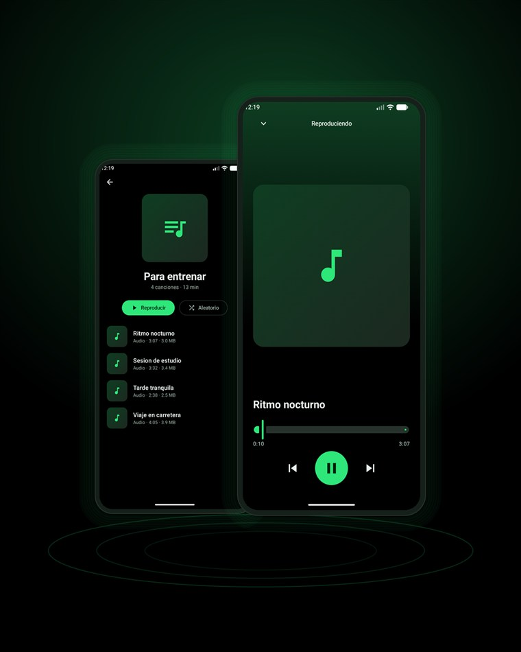

Android · Código abierto · Versión 1.1
Descarga videos y música de tus redes favoritas
Busca y mira videos sin anuncios, o comparte un enlace desde YouTube, TikTok, Instagram, X o Facebook y descárgalo con la calidad que quieras. Sin registro y sin límites.
Android 8.0 o superior · 67 MB · Gratis
- Sin anuncios
- Sin registro
- Código abierto
- Reproductor incluido
- Videos en línea

Novedades de la 1.1
Lo que trae la última versión. Si ya tienes ExoTube, puedes instalarla encima sin perder tus playlists.
-
Explorar: videos en línea
Busca en YouTube y mira los videos dentro de ExoTube, sin publicidad. Con atajos por tema y un modo de ahorro de datos que trae solo el sonido.
-
Bucle y orden aleatorio
Repite una canción 1 vez, 2 veces o siempre. El número sobre el botón te dice cuántas repeticiones quedan.
-
Buscador en tu biblioteca
Encuentra cualquier canción por título o artista. No distingue mayúsculas ni tildes: "cancion" encuentra "Canción".
-
Carátulas en tus MP3
La portada del video queda dentro del archivo y se ve en la app, en la notificación y en cualquier reproductor de música.
Todo lo que necesitas
Una sola app para descargar, guardar y escuchar.
-
Desde el botón Compartir
No hace falta copiar enlaces. Toca "Compartir" en cualquier app y elige ExoTube.
-
Videos en línea Nuevo
Busca y mira videos sin anuncios, sin salir de la app y sin ocupar espacio en el teléfono.
-
Tú eliges la calidad
Desde 360p hasta 4K, con el peso de cada opción antes de descargar.
-
Solo el audio en MP3
Convierte cualquier video en música, con su carátula dentro del archivo.
-
Reproductor integrado
Escucha con la pantalla apagada, con bucle, orden aleatorio y controles en la notificación.
-
Tus playlists
Agrupa tus canciones favoritas y ponles la foto que quieras.
-
Descarga en segundo plano
Sigue usando el teléfono: verás el avance en la notificación y podrás cancelar.
En tres pasos
-
1
Comparte el enlace
En YouTube, TikTok, Instagram, X o Facebook, toca "Compartir" y elige ExoTube.
-
2
Elige el formato
Aparece una ventana con las calidades de video y la opción de solo audio.
-
3
Disfrútalo
El archivo queda en tu galería o tu música, listo para verlo sin conexión.
Descarga ExoTube
Instalación directa. No está en Google Play porque sus normas no permiten apps que descargan de estas plataformas.
ExoTube 1.1
Para la mayoría de teléfonos (ARM64) · 67 MB
¿Tu teléfono es antiguo o es un emulador?
- ExoTube para ARM de 32 bits (armeabi-v7a) — teléfonos anteriores a 2017 · 61 MB.
- ExoTube para x86_64 — emuladores y equipos Intel · 70 MB.
Si no sabes cuál elegir, usa el botón principal: funciona en casi todos los teléfonos actuales.
Cómo instalarlo
-
1
Descarga el archivo APK con el botón de arriba.
-
2
Ábrelo. Android te pedirá permiso para instalar apps de esta fuente: actívalo y vuelve atrás.
-
3
Pulsa "Instalar" y abre ExoTube. La primera vez tarda unos segundos en prepararse.
Preguntas frecuentes
¿Por qué no está en Google Play?
Las normas de Google Play no permiten aplicaciones que descarguen contenido de plataformas como YouTube. Por eso ExoTube se instala desde esta página, igual que otras apps de código abierto.
¿Es seguro instalar un APK?
Lo es si confías en la fuente. ExoTube es de código abierto: puedes leer todo su código y compilarlo tú mismo. Descárgalo solo desde esta página, ya que un APK modificado por terceros sí puede ser peligroso.
¿Qué plataformas admite?
YouTube, TikTok, Instagram, X y Facebook. Si el contenido es privado o requiere iniciar sesión, la app te lo indicará en lugar de fallar sin explicación.
¿Cómo se ven los videos en línea sin anuncios?
ExoTube le pide el video directamente al servidor, sin pasar por el reproductor de la plataforma, que es donde se insertan los anuncios. Esas direcciones caducan a las pocas horas, así que si algún video falla basta con volver a tocarlo. Necesitas conexión para explorar, pero lo que ya hayas descargado se escucha sin internet.
¿Dónde se guardan los archivos?
Los videos en "Movies/ExoTube" y la música en "Music/ExoTube". Aparecen en tu galería y en tu reproductor de música habitual, así que puedes usarlos aunque desinstales la app.
¿Tiene anuncios o recoge mis datos?
No tiene anuncios ni pide registro. La app guarda un historial de descargas asociado a un identificador anónimo, sin nombre, correo ni teléfono.
¿Puedo descargar cualquier video?
Técnicamente sí, pero legalmente no. Descarga solo contenido tuyo, de dominio público o cuyo autor permita la descarga. Consulta el aviso de abajo.
Aviso legal
ExoTube es una herramienta. El uso que le des es tu responsabilidad: respeta los derechos de autor y los términos de servicio de cada plataforma. No usa ni distribuye contenido de terceros, y no está afiliada a YouTube, TikTok, Instagram, X ni Facebook.